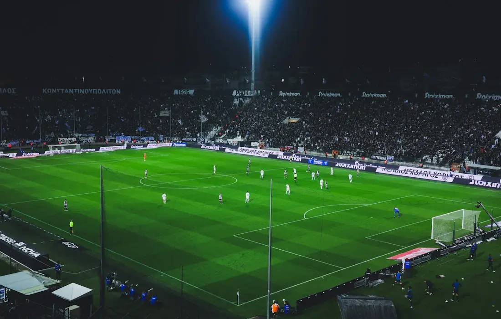
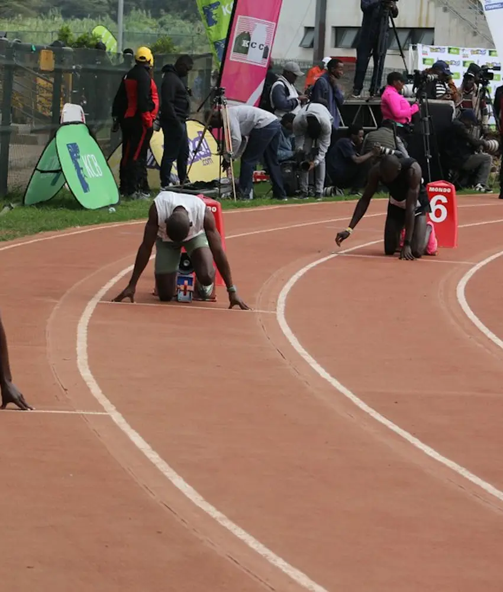
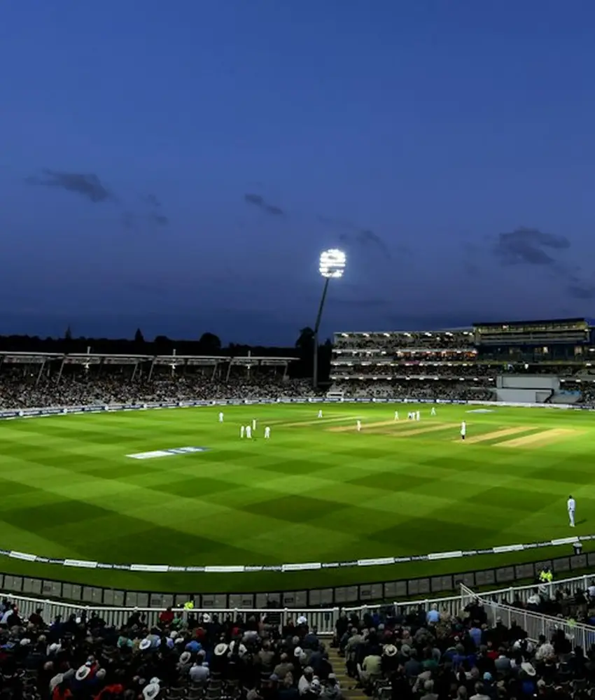
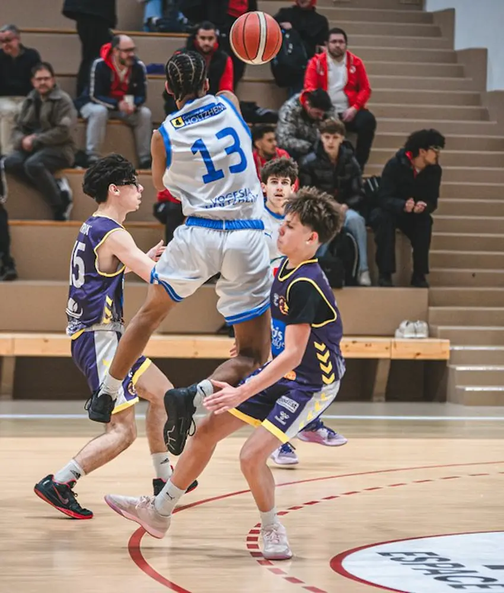
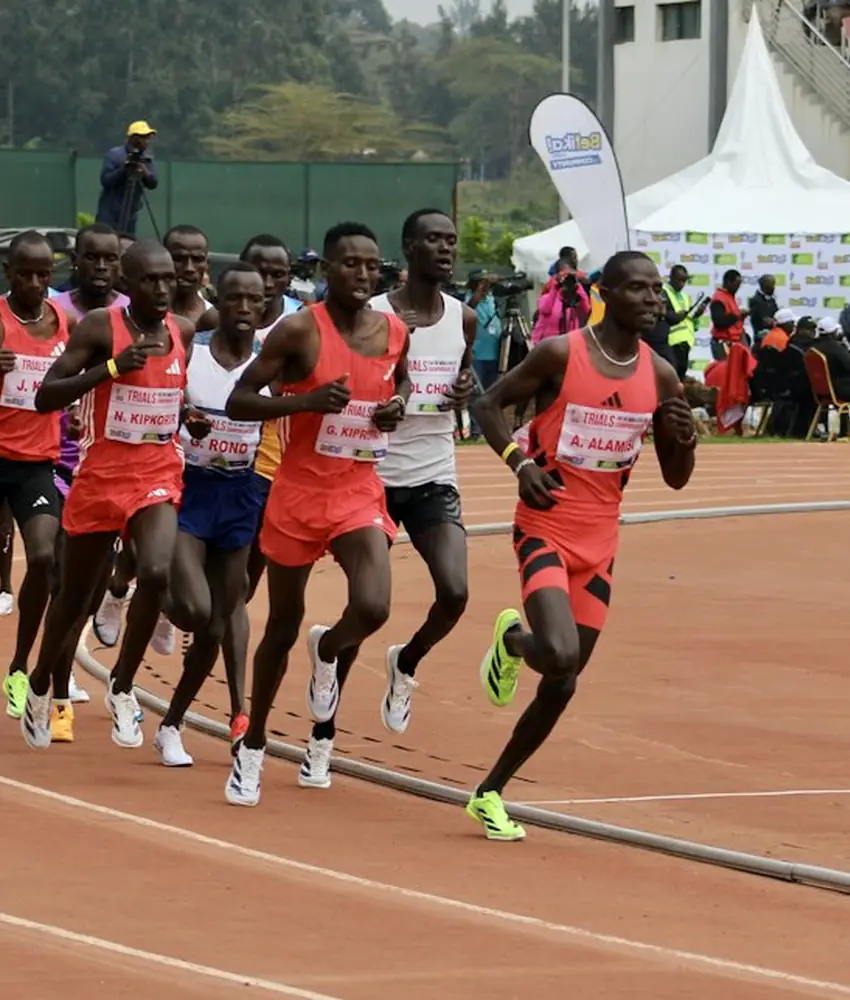
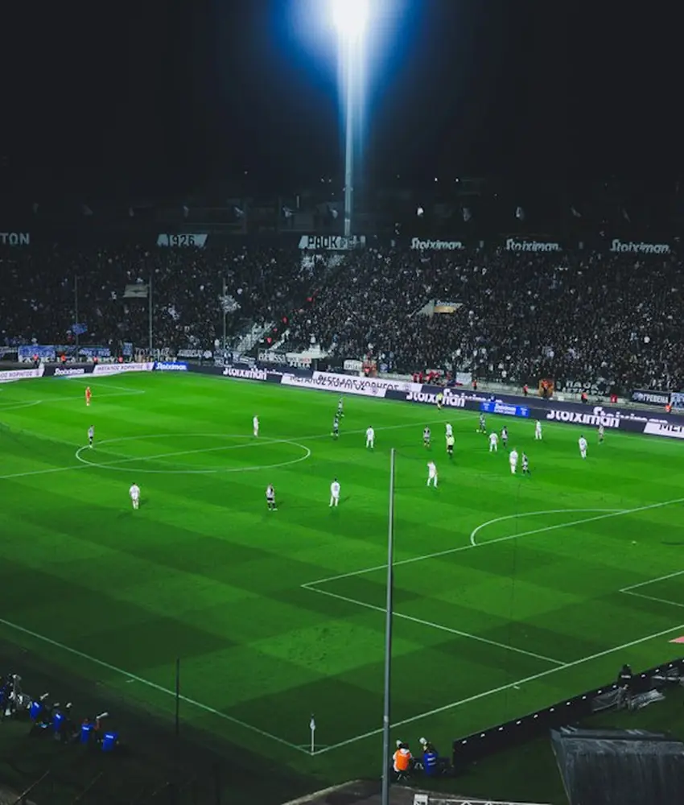
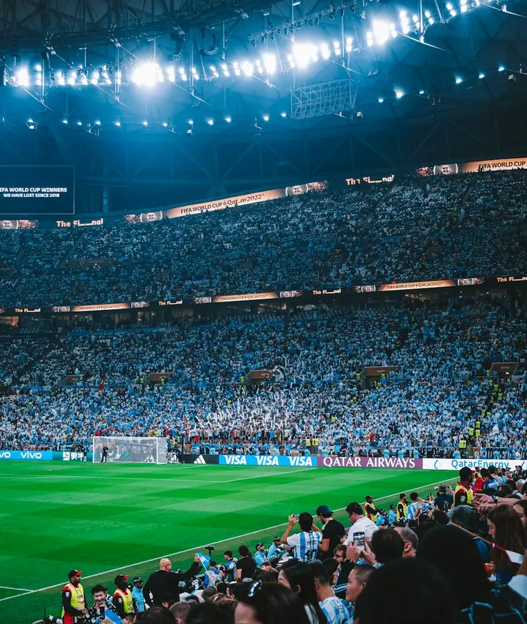

Plan
Run the whole season
Build tournaments, invite teams, assign venues, and keep every moving part in one clear timeline.
Tournament planningThe sports operating system
Stackly brings your tournaments, teams, schedules, venues, and live scores into one beautifully calm command center.

One source of truth
The best tournaments feel effortless on the surface. Stackly handles the moving parts underneath, so your team can stay present for the moments that matter.
Build tournaments, invite teams, assign venues, and keep every moving part in one clear timeline.
Tournament planning
Drag, drop, and publish schedules that respect time zones, availability, and the energy of every match.
Smart schedulingLive scores, player stats, and highlight-ready updates that keep fans close from first whistle to final.
Live score centerDesigned for the whole crew
From the first team registration to the final trophy ceremony, Stackly gives every role the clarity to do their best work.
Built for every arena
From grassroots football to high-stakes finals, Stackly flexes around the way your competition works.

Leagues, cups, and full tournament days.

Live scoring, brackets, and crowd energy.

Heat sheets, lanes, and every personal best.
The quiet confidence
Stackly gives us the rare feeling that every detail has already been considered.
Made for momentum
From the first invite to the final celebration, a clear workflow gives your people more room to bring their best.
Read the Stackly storyInside the workflow
Six working surfaces, one shared source of truth, and no spreadsheet archaeology the night before kickoff.
Collect rosters, documents, and fees in a single guided sign-up.

Auto-seed, auto-schedule, and publish to every team at once.

Assign pitches, officials, equipment, and kickoff windows in one pass.
Officials log events; fans see them instantly on any device.
Send briefs, reminders, and result alerts to players, parents, and press.

Close the season with records, medals, and a shareable recap.

Live control room
Stackly keeps the match clock, score, substitutions, and audience updates in sync across every role.
Open score center